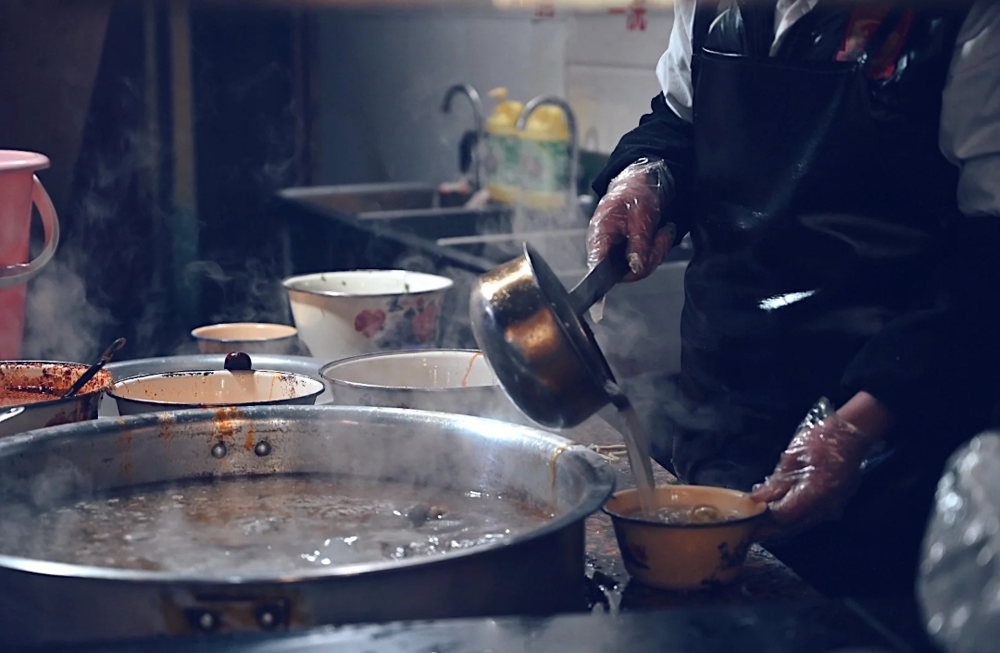
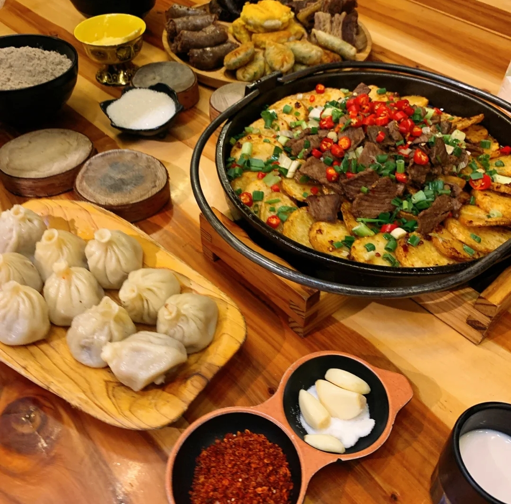
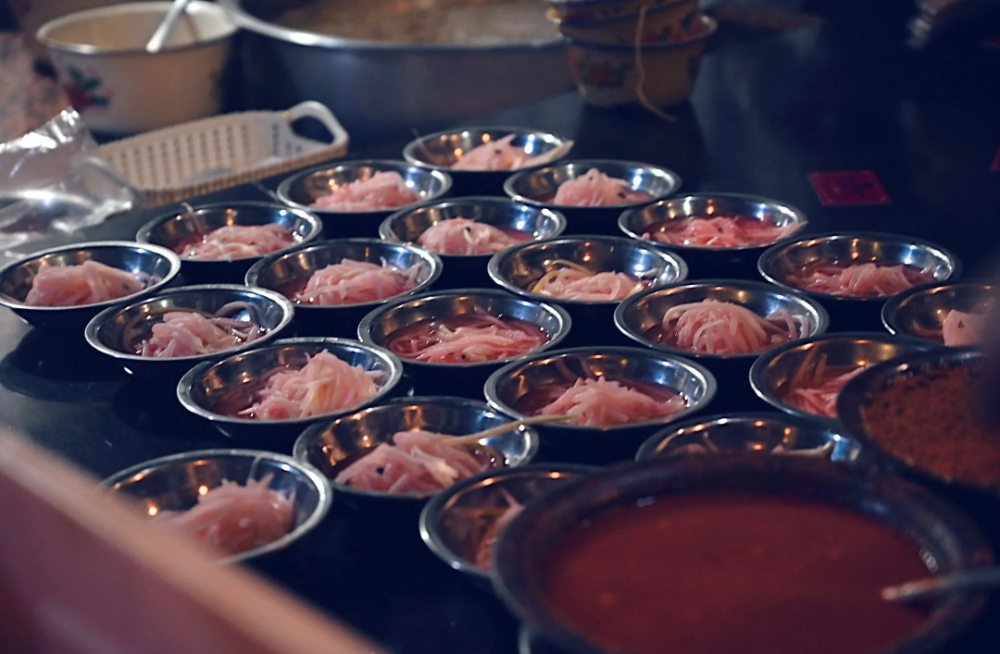
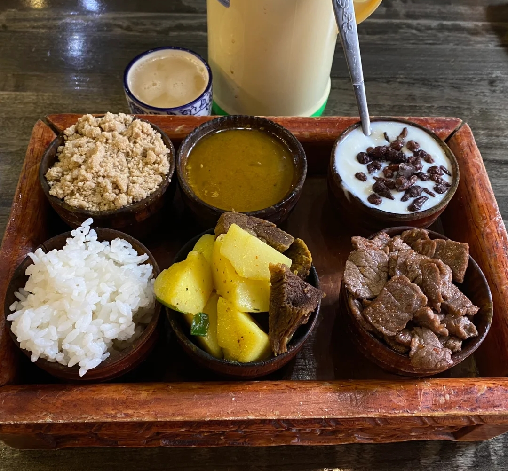
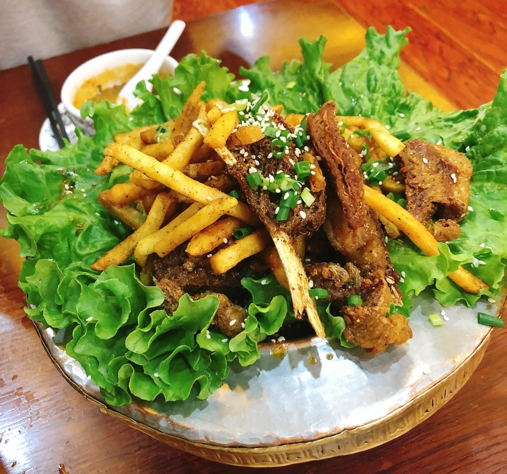
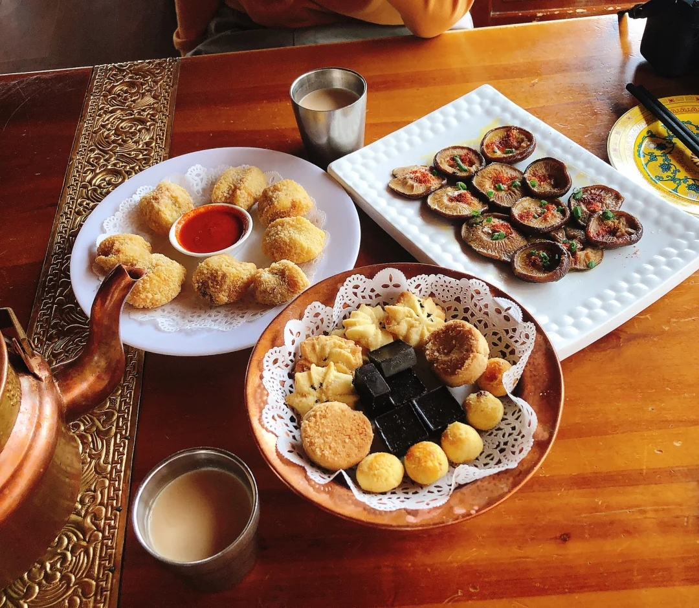
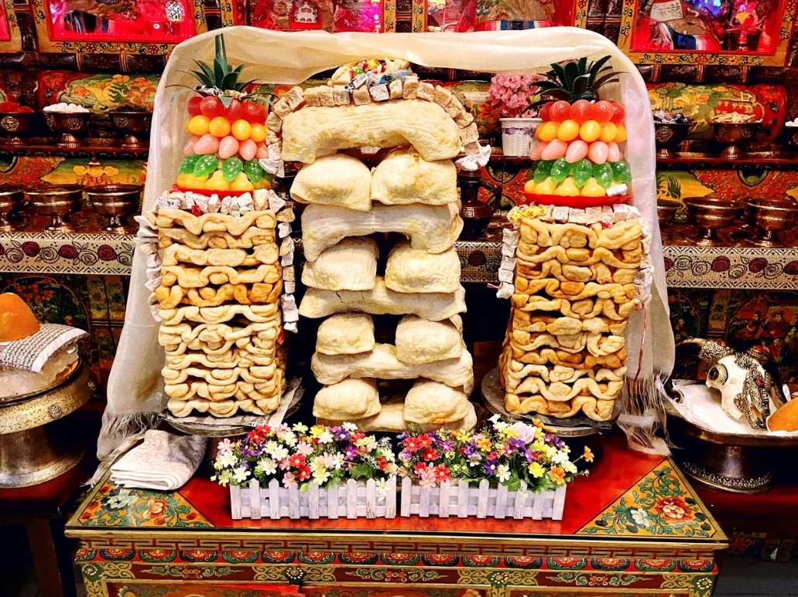

✨在西藏旅游时切勿在藏民刚吃完饭后就到访，要么在饭前到访要么等饭后过一段时间再到访。
✨不要吃马肉、驴肉、骡子肉、猫肉、狗肉等。
✨由于藏民多席地用餐，不要从别人家里的炊具和实物上跨过。
✨吃饭的时候不要塞的满嘴事物，吃饭不要吧唧嘴，吃饭时候不要打闹嬉戏。
✨藏族忌讳吃死的牛羊猪肉。
✨不要把碗倒着扣，藏民过世前用过的碗才会倒着扣。
✨不要用反手添茶倒水，这种动作是为已故的人添茶倒水时才会做的，用这种动作对人是极为不尊敬的


